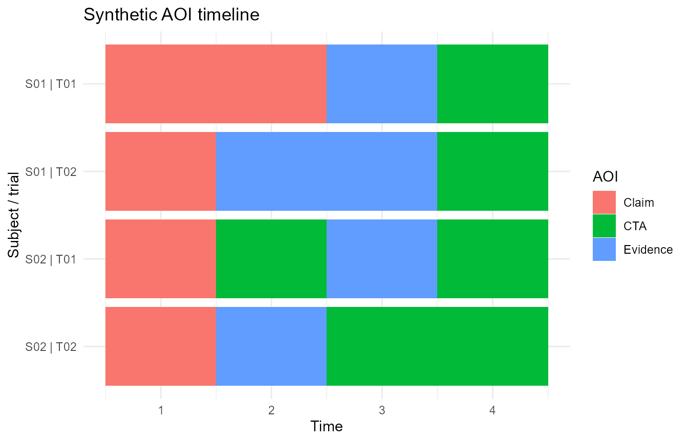

AOI sequence and reliability diagnostics
Source:vignettes/articles/sequence-reliability.Rmd
sequence-reliability.RmdThis article demonstrates conservative statistical extensions for Gazepoint-style AOI and fixation workflows. The examples use small synthetic data and are intended as software demonstrations, not empirical findings.
if (requireNamespace('pkgload', quietly = TRUE)) {
pkgload::load_all('.', export_all = FALSE, quiet = TRUE)
} else {
library(gp3tools)
}
aoi_demo <- data.frame(
subject = rep(c('S01', 'S02'), each = 8),
trial = rep(rep(c('T01', 'T02'), each = 4), 2),
condition = rep(c('control', 'treatment'), each = 8),
time = rep(1:4, 4),
AOI = c(
'Claim', 'Claim', 'Evidence', 'CTA',
'Claim', 'Evidence', 'Evidence', 'CTA',
'Claim', 'CTA', 'Evidence', 'CTA',
'Claim', 'Evidence', 'CTA', 'CTA'
)
)AOI entropy
compute_gazepoint_aoi_entropy(
aoi_demo,
aoi_col = 'AOI',
group_cols = c('subject', 'trial', 'condition'),
time_col = 'time'
)
#> subject trial condition n_observations n_aoi spatial_entropy
#> 1 S01 T01 control 4 3 1.5
#> 2 S01 T02 control 4 3 1.5
#> 3 S02 T01 treatment 4 3 1.5
#> 4 S02 T02 treatment 4 3 1.5
#> spatial_entropy_norm n_transitions n_transition_types transition_entropy
#> 1 0.9463946 3 3 1.584963
#> 2 0.9463946 3 3 1.584963
#> 3 0.9463946 3 3 1.584963
#> 4 0.9463946 3 3 1.584963
#> transition_entropy_norm conditional_transition_entropy
#> 1 1 0.6666667
#> 2 1 0.6666667
#> 3 1 0.0000000
#> 4 1 0.0000000
#> conditional_transition_entropy_norm entropy_status
#> 1 0.4206198 ok
#> 2 0.4206198 ok
#> 3 0.0000000 ok
#> 4 0.0000000 okAOI sequence metrics
compute_gazepoint_aoi_sequence_metrics(
aoi_demo,
aoi_col = 'AOI',
group_cols = c('subject', 'trial', 'condition'),
time_col = 'time'
)
#> subject trial condition sequence_length n_aoi_visits n_unique_aoi
#> 1 S01 T01 control 4 3 3
#> 2 S01 T02 control 4 3 3
#> 3 S02 T01 treatment 4 4 3
#> 4 S02 T02 treatment 4 3 3
#> transition_count revisit_count revisit_prop dominant_aoi first_aoi last_aoi
#> 1 2 0 0.00 Claim Claim CTA
#> 2 2 0 0.00 Evidence Claim CTA
#> 3 3 1 0.25 CTA Claim CTA
#> 4 2 0 0.00 CTA Claim CTA
#> mean_run_length max_run_length sequence_status
#> 1 1.333333 2 ok
#> 2 1.333333 2 ok
#> 3 1.000000 1 ok
#> 4 1.333333 2 okSequence distance
compute_gazepoint_sequence_distance(
sequence_a = c('Claim', 'Evidence', 'CTA'),
sequence_b = c('Claim', 'CTA', 'Evidence')
)
#> edit_distance normalized_distance sequence_a_length sequence_b_length
#> 1 2 0.6666667 3 3
#> distance_status
#> 1 okSplit-half reliability
fix_demo <- expand.grid(
subject = paste0('S', 1:8),
trial = paste0('T', 1:4),
KEEP.OUT.ATTRS = FALSE
)
fix_demo$duration <- rep(seq_len(8), each = 4) +
rep(c(0, 0.1, 0, 0.1), 8)
audit_gazepoint_fixation_reliability(
fix_demo,
subject_col = 'subject',
trial_col = 'trial',
metric = 'total_fixation_duration',
duration_col = 'duration'
)
#> metric split_method correlation_method split_half_r
#> 1 total_fixation_duration odd_even pearson 1
#> spearman_brown n_subjects_total n_subjects_used n_trials min_trials
#> 1 1 8 8 32 4
#> reliability_status reliability_warning
#> 1 okAOI timeline plot
plot_gazepoint_aoi_timeline(
aoi_demo,
aoi_col = 'AOI',
time_col = 'time',
subject_col = 'subject',
trial_col = 'trial',
title = 'Synthetic AOI timeline'
)